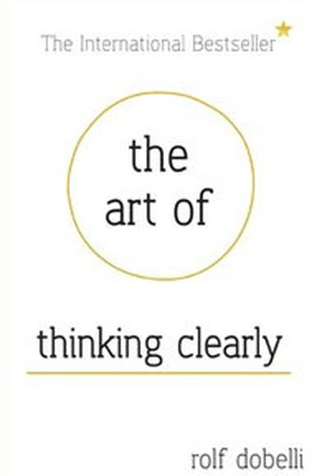

Library › Psychology & People
The Art of Thinking Clearly — Summary & Key Lessons

99 cognitive biases that quietly ruin your decisions — and how to spot them before they ruin you.
📖 OPEN THE FULL INTERACTIVE BREAKDOWN →🌐 Read it in Hindi, Hinglish, Gujarati, Tamil & 22 more languages — free, with audio.
💡 The Big Idea
Dobelli catalogs 99 systematic errors in human thinking — from survivorship bias and confirmation bias to sunk-cost fallacy and social proof. Each chapter is a tiny, sharp lesson: the bias, why it exists, and how to defend against it. The meta-lesson: your brain is a shortcut machine built for a different world; thinking clearly is mostly learning where your automatic judgments lie.
🧠 The 5 Key Lessons
Lesson 1: Survivorship Bias: The Graveyard Doesn't Give Interviews
Why You See What Winners Look Like
We only see the survivors — successful startups, toppers, rich people — and never the graveyard of equally good attempts that failed. So we overestimate the odds and copy the wrong lessons. The 'how-to' books are written by the lucky survivors; the failures that could teach more are invisible.
📖 Example: Dobelli's classic: every business book praises risk-taking because the risk-takers who won wrote books. The risk-takers who lost are silent. A famous study showed most startup founders' paths looked similar — the difference was often luck, not skill. Read the full example →
⚡ Do this: Whenever you study a success, ask: 'How many tried the same thing and failed?' The base rate is the real number to beat.
Lesson 2: Swimmer's Body Illusion: Confusing Cause and Effect
The Swimmer's Body
Elite swimmers have great bodies — but swimming didn't give them those bodies; their genetics made them good at swimming. We constantly confuse the effect with the cause, copying the behavior instead of the underlying factor.
📖 Example: Harvard students are disciplined — but Harvard didn't make them disciplined; disciplined people got into Harvard. Companies with great culture attract great people — the culture isn't always the cause of their success. Read the full example →
⚡ Do this: For any admired outcome, ask: 'Is this behavior the cause — or just the side effect of something else?'
Lesson 3: Sunk Cost: The Money Is Gone — Stop Throwing More
Sunk Costs
We keep investing in failing projects, careers and relationships because of what we've already put in. Economically, the past is gone — only the future matters. Letting go feels wasteful, but staying is the real waste.
📖 Example: Dobelli's examples: watching a bad movie because you paid for it; staying in a dying project because you've poured months in; countries continuing pointless wars because of lives already lost. Each decision should be made on future value alone. Read the full example →
⚡ Do this: Ask the killer question on any failing thing: 'If I were starting today with zero invested, would I choose this?' If no — walk.
Lesson 4: Confirmation Bias: The Mind Finds What It Looks For
Confirmation
Your brain seeks evidence that supports what you already believe and ignores the rest. Every opinion you hold is backed by cherry-picked 'proof'. The antidote isn't more information — it's deliberately hunting for disconfirming evidence.
📖 Example: Studies show doctors, investors and even scientists interpret the same data to confirm their prior view. Dobelli's fix: 'write down your belief, then actively search for what would prove it wrong' — the fastest way to see reality. Read the full example →
⚡ Do this: Pick one strong belief and spend 15 minutes finding the best argument AGAINST it. Update your confidence — that's thinking.
Lesson 5: The Social Proof Fallacy: Everyone's Doing It (So Don't)
Social Proof
Humans copy the herd — it was smart on the savanna, disastrous in markets. When everyone is buying, selling, or believing the same thing, that's usually the moment NOT to join. The herd is not a source of information; it's a source of comfort.
📖 Example: Dobelli traces bubbles — from tulips to dot-com — where social proof fueled the buying until the crowd reversed. The crowd's confidence is inversely proportional to its accuracy at extremes. Read the full example →
⚡ Do this: Before joining any 'everyone is doing it' bandwagon, ask: 'Would I do this if I were the only one?' If not, the herd is deciding for you.
✅ 5-Step Action Plan
- Check the base rate before copying any success.
- Separate cause from effect in admired outcomes.
- Apply the zero-investment test to one sunk-cost project.
- Hunt disconfirming evidence for one belief, 15 minutes.
- Pause before any herd move and ask the alone-test.
⚠️ When This Doesn't Work
Dobelli's 99 cognitive errors are razor-sharp — and Salem is the reminder that knowing the errors doesn't stop them: the judges who hanged innocent people in 1692 were educated, rational, and certain they were protecting their community from a clear danger. Their certainty was the delusion. Reading about biases is like reading about a disease — useful, but not immunity. The only real defence is structural: force dissent, require evidence, slow down decisions that involve other people's lives. Awareness is the beginning; procedure is the cure.
💀 The Graveyard Proves It
⚖️ The Salem Panic — When Fear Became Evidence: 20 Dead on 'Spectral' Testimony. Burn: 20 executed; a society's shame. Read the full case study →
💬 Best Quotes from The Art of Thinking Clearly
- “Thinking clearly is a moral duty — because unclear thinking makes the world worse.”
- “The sunk cost fallacy: why you keep watching bad movies.”
- “Never judge a decision purely by its results.”
Interactive version: mark lessons as read, listen in your language, share quote cards.